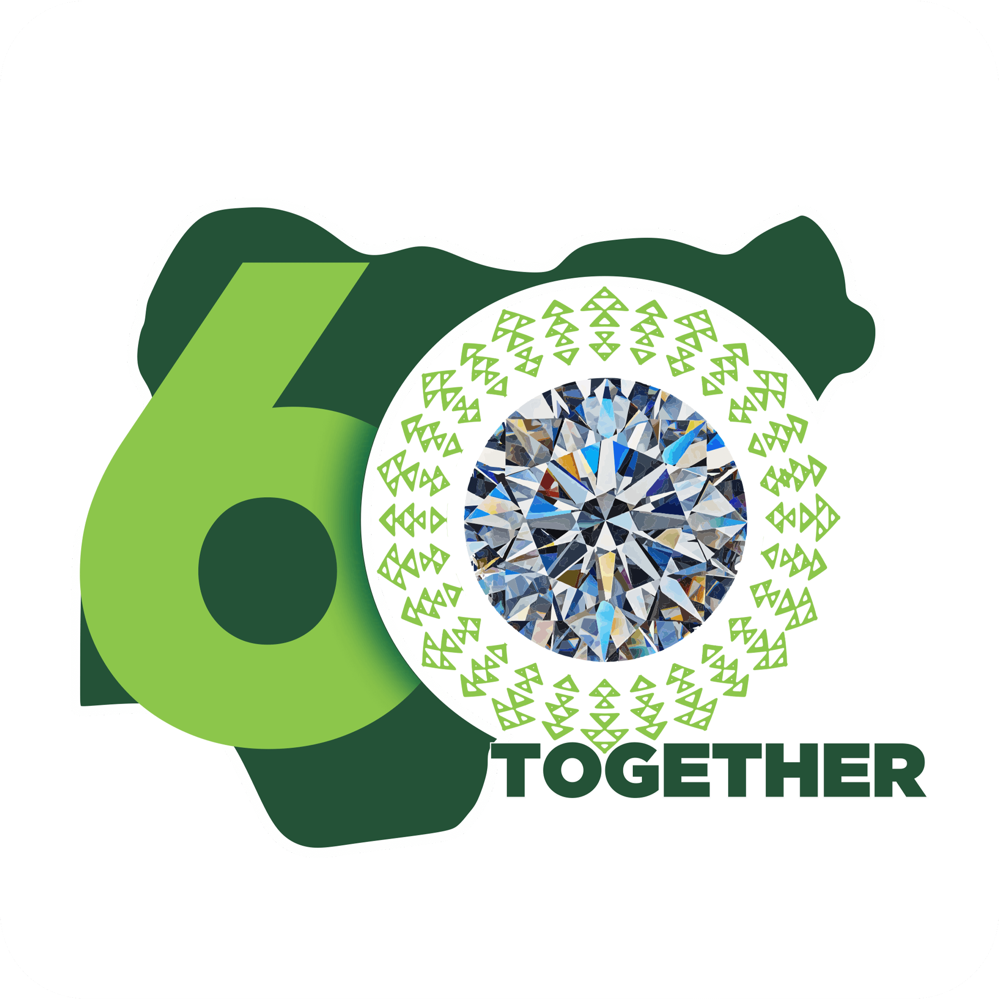
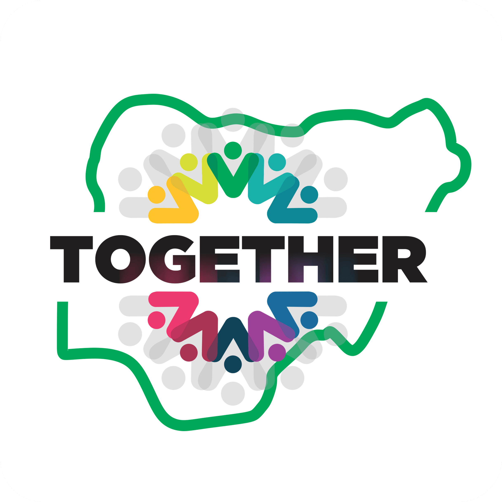
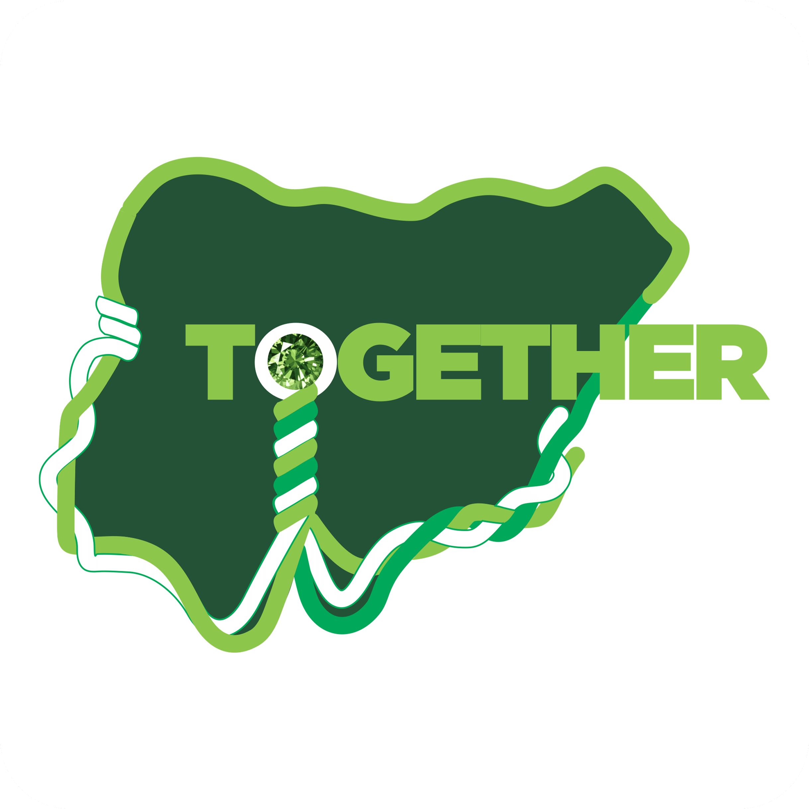
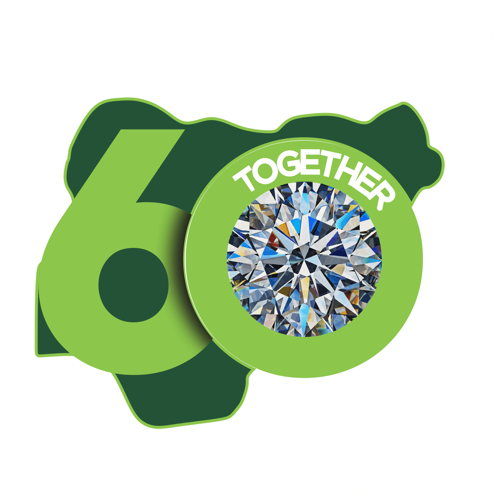

<section class="vote-area hero-area">
  <div class="container-fluid">
    <h1>Vote the Best Nigeria@60 Logo</h1>
    <p>
      To give Nigerians a memorable 60th anniversary it is crucial to choose a
      logo.
    </p>

    <p>There are four logo options and one needs to be selected.</p>

    <p>
      The selected logo will be used during the 60th Anniversary celebrations.
    </p>
    <p>
      The selected logo will also be used in the Nigerian Naira currency notes
      and postal stamps.
    </p>
    <p>
      The selected logo will be used as design merchandise by manufacturers.
    </p>
    <p>
      Be part of the celebration, be part of history by participating in voting
      to select the best Nigeria@60 logo. Click the vote buttone below to start
    </p>

    <div class="image">
      <div class="row">
        <div class="col-lg-3 mx-auto">
          
        </div>

        <div class="col-lg-3">
          
        </div>

        <div class="col-lg-3">
          
        </div>

        <div class="col-lg-3">
          
        </div>
      </div>

      <div class="action-button">
        <button class="btn btn-white d-flex align-items-center">CLICK HERE TO VOTE</button>
      </div>
    </div>
  </div>
</section>
